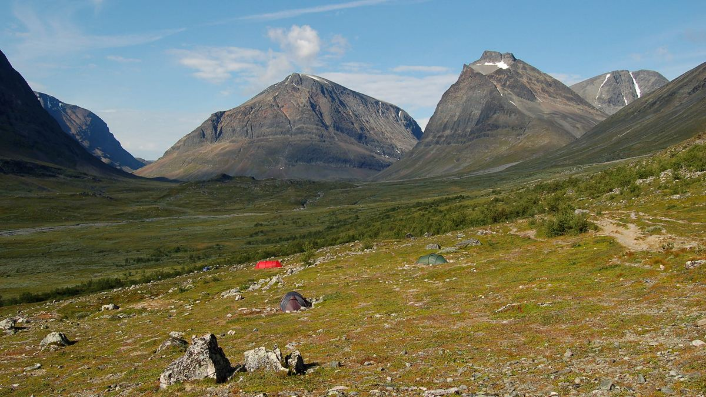
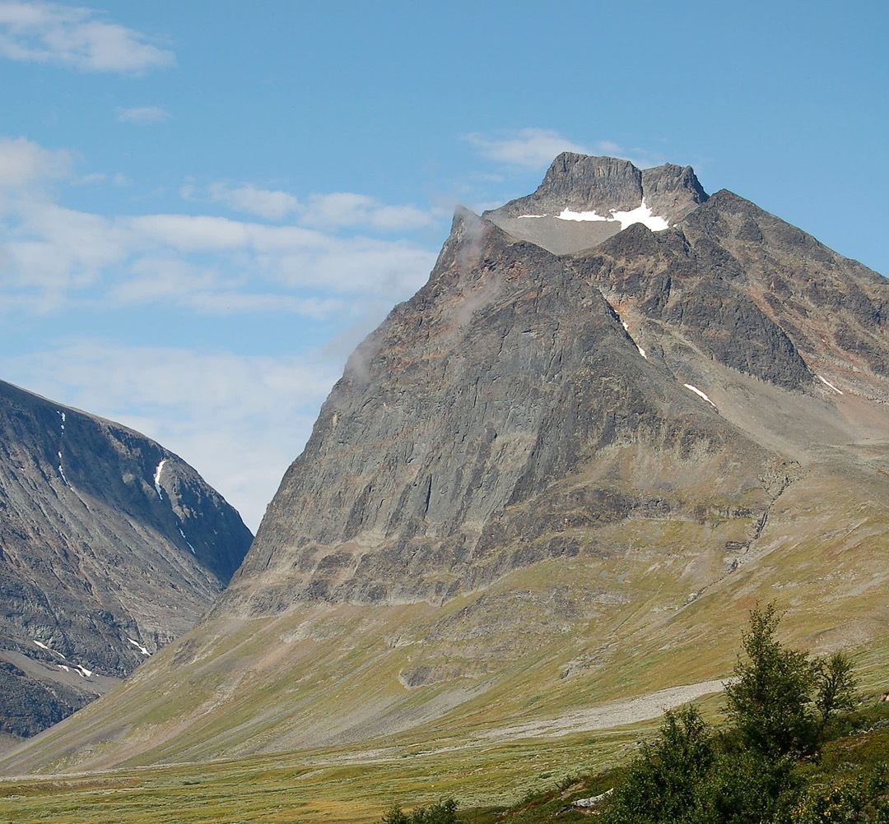
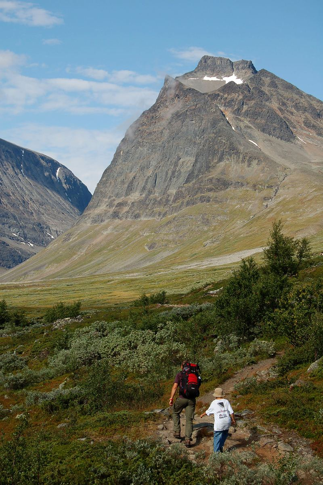
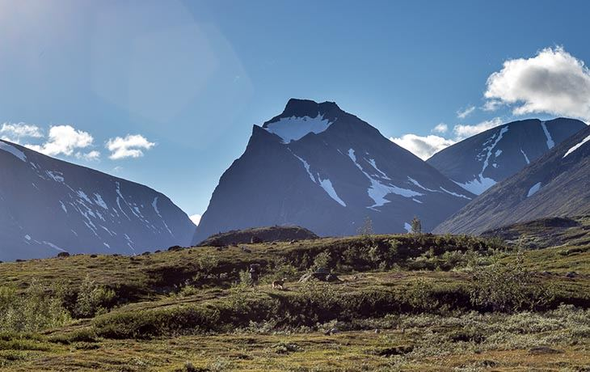
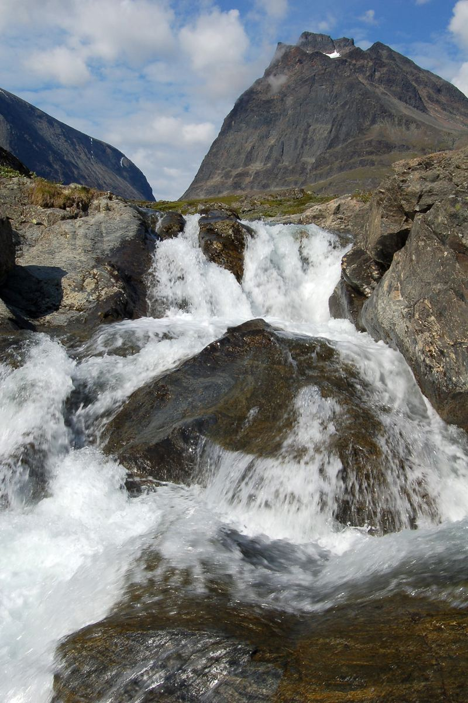

Technology-intensive companies are full of knowledge that is never written down, tested or shared. tolpagorni thoughts is a place where that knowledge is developed slowly and in the open: as short thoughts, as investigations with real milestones, as conversations, and once a year as a publication.
The house works with companies, researchers and practitioners. Anyone can follow along, and anyone with experience to share can take part.
- magnusfounder, host of magnus meetsWorks with product and platform questions in B2B technology companies.
- contributorspractitioners and researchersPeople who share cases, review drafts and join investigations.
- partnerscompanies in the investigationsNamed with their permission, on each investigation page.
Tolpagorni is a mountain on the way to Kebnekaise in Swedish Lapland. Travellers have long used it to find their way through the valleys towards the highest peak. The house took the name for the same reason: knowledge that helps you find the way, rather than knowledge that tells you where to stand.





tolpagorni thoughts AB · tolpagorni.com